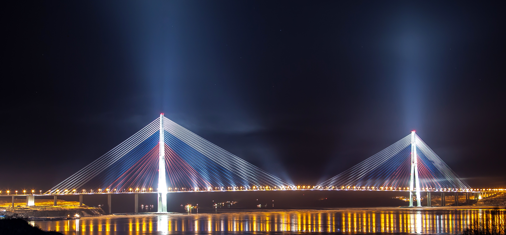

Главная страница
Список мостов

Русский мост — вантовый мост во Владивостоке, соединяющий полуостров Назимова с островом Русский.
Мост был построен в рамках подготовки Владивостока к саммиту АТЭС и открыт в 2012 году.
Общая длина моста составляет около 3100 метров, а длина главного пролёта — 1104 метра.
Русский мост является одним из самых известных инженерных сооружений Владивостока.
Русский мост долгое время имел один из самых длинных вантовых пролётов в мире.
Мост стал одним из символов современного Владивостока.